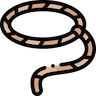

Step 3: Discovering Emergent Themes
In the next stage of coding, often called “pattern coding” (Miles, Huberman, and Saldaña 2020), we group the descriptive codes made in the previous phase into a smaller number of categories or themes. Themes or categories “are broad units of information that consist of several codes aggregated to form a common idea” (Creswell and Poth 2018, 194). These categories can be thought of as somewhat of a meta-code.*
*For quantitative researchers, this process can be thought of as an analog to cluster-oriented or factor-oriented approaches in statistical analysis.
Miles, M. B., A. M. Huberman, and J. Saldaña. 2020. Qualitative Data Analysis. Thousand Oaks, CA: Sage.
Creswell, J. W., and C. N. Poth. 2018. Qualitative Inquiry & Research Design. Thousand Oaks, CA: Sage.
Merriam, S. B., and E. J. Tisdell. 2016. Qualitative Research. San Francisco, CA: John Wiley & Sons.
Categories should span multiple codes that were previously identified. These categories “capture some recurring pattern that cuts across your data” (Merriam and Tisdell 2016, 207). Merriam and Tisdell (2016) suggest this process of discovering themes from codes feels somewhat like constantly transitioning one’s perspective of a forest, from looking at the “trees” (codes) to the “forest” (themes) and back to the trees.
Discoving Themes
As I looked over my descriptive codes, I asked myself what these codes tell me about the nature of the data science skills students used in their projects. Some themes immediately jumped out at me, whereas others took a bit of time to mull over. I’ll walk you through my process below.
“Obvious” Themes
There were two themes I expected to see due to the nature of the project and the requirements stipulated by the professor. For their project, students were expected to (1) use an analysis strategy learned in the course and (2) create a visualization to accompany any analysis and resulting discussion. Thus, I expected themes of “Data Model” and “Data Visualization” to emerge from the data.
From my own experiences, I also expected that students would need to perform some aspect of data wrangling to prepare their data for analysis. The data students used for their project were from their own research, so, although I knew data wrangling would play some role, I was unsure what type of tasks might appear in the codes.
Emergent Themes
While I was looking over the data wrangling tasks students performed in their projects, I noticed the techniques used required knowledge of different data structures. The implementation of some tasks was fairly uniform (select column from dataframe using $ operator), whereas other tasks were highly variable. Data filtering was sometimes done with the subset() function, which requires little explicit knowledge of data structures. However, other times this filtering was carried out using the [] / extraction operator, a technique which requires an understanding of how extraction differs across different data structures (e.g., dataframes, matrices, vectors).
I also noticed while looking at the R code for the “Data Model” and “Data Visualization” themes that certain statements of code included some knowledge (or lack thereof) regarding the R Environment. The most obvious statement that evoked this theme used with() to temporarily attach a dataframe. There were, however, other statements that also fit into this theme, such as function arguments being bypassed, sourcing in an external R script, loading in datasets, and loading in packages.
Within the themes of “Data Model” and “Data Wrangling,” I uncovered an additional theme which speaks to the efficiency of a statement of code. The notion of efficiency came to me from the “don’t repeat yourself” principle (Wilson et al. 2014), which recommends scientists modularize their code rather than copying and pasting and re-use their code instead of rewriting it (p. 2). Thus, I considered code which adhered to these practices “efficient” and code which did not adhere to these practices “inefficient.”
Wilson, Greg, D. A. Aruliah, C. Titus Brown, Neil P. Chue Hong, Matt Davis, Richard T. Guy, Steven H. D. Haddock, et al. 2014. “Best Practices for Scientific Computing.” PLOS Biology 12 (1): e1001745.
The final theme I discovered were statements of code whose purpose was more for a student’s workflow than anything else. Code comments were my first indication of this theme, where students used code comments to create sections of code or flag what was happening in a particular line / lines of code. I expanded this theme to include statements of code which inspect some characteristic of an object (e.g., structure of a datafame, names of a dataframe, summary of a linear model).
Assigning Descriptive Codes to Themes
For each of the themes outlined above, the associated “atoms” / statements of code are listed. Keep in mind one statement can apply to two themes! For example, the code
linearAnterior <- lm(PADataNoOutlier$Lipid ~ PADataNoOutlier$PSUA)
applies to three themes. First and foremost, this code uses lm() to fit a linear regression model to the data (data model). Second, in order to fit the data model, the student uses data wrangling to select the variables of interest(PADataNoOutlier$Lipid, PADataNoOutlier$PSUA). Finally, this code does not make use of the data = argument built in to lm(), which implies a lack of understanding of the function and thus the R environment.
Data Model
Definition: Statements of code whose purpose is to create a statistical model from data.
Data Visualization
Definition: Statements of code whose purpose is to visualize relationships between variables
Sub-themes
- scatterplot
- adding lines to plot
- differentiated colors
- including a legend
- changing plotting environment
- modifying axis labels / plot titles
Data Wrangling

Definition: Statements of code whose purpose is to prepare a dataset for analysis and / or visualization
Sub-themes
- selecting columns
- filtering rows / observations
- mutating variables
- summarizing variables
- summarizing variables across groups
Data Structures
Definition: An statement of code which explicitly calls upon attributes of a data structure (e.g., dataframe, matrix, vector)
R Environment
Definition: A statement of code which calls on explicit aspects of the R environment
Efficiency / Inefficiency

Definition: A statement of code which adheres to the “don’t repeat yourself” principle
Workflow

Definition: A statement of code which facilitates a smooth execution of a working process